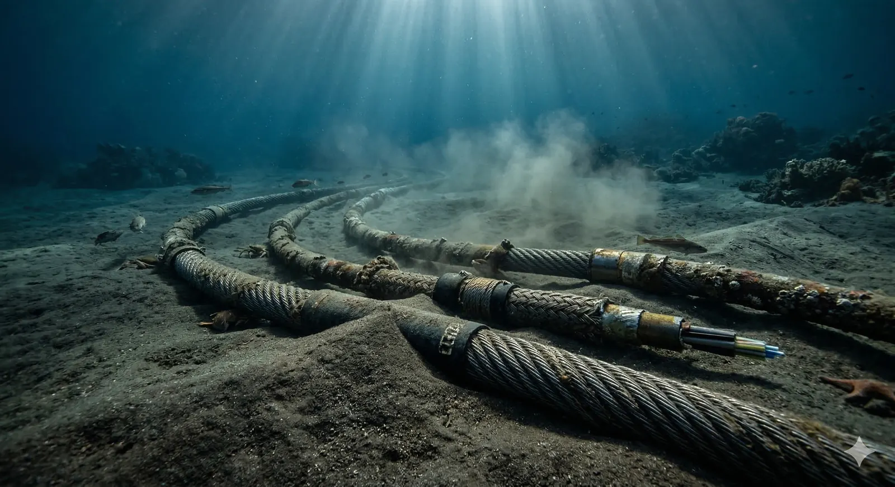

The Real Failure Mode Is Regional Degradation, Not Instant Blackout.
This article is intentionally bounded. It is a scenario-based engineering analysis prepared from lawful, publicly available sources about simultaneous fiber damage in the Strait of Hormuz and Gulf of Oman corridor. It does not attribute responsibility to any actor, does not describe sabotage methods, and should not be read as legal attribution, security advice, or investment advice.
That boundary matters because cable-risk commentary becomes useless when it drifts into political fiction. The more practical question is narrower and harder: if several major routes in this corridor failed at roughly the same time, what would fail first in network, industrial, and societal terms?
The answer is not "the Gulf goes dark." The answer is that the Gulf starts running on thinner, slower, more expensive digital lifelines. Spare capacity is the first thing to disappear. Service quality degrades unevenly. Carriers start protecting critical traffic. Cloud, finance, logistics, and public digital services feel stress long before a casual observer concludes that a region is offline.
The most realistic outcome is not a cinematic outage map. It is a region forced into emergency routing, emergency prioritization, and emergency economics.
Executive Takeaway
One damaged system is usually a resilience test. Several damaged systems in the same corridor become a capacity squeeze. Several damaged systems plus slow repair access become a strategic infrastructure crisis.
High Confidence This reading is grounded in public cable topology, operator route disclosures, prior cable-fault behavior, and industry repair data.
Key Takeaways
- What breaks first is spare capacity. The network can remain online while performance and reliability degrade sharply.
- Geodiversity matters more than cable count. Multiple named systems can still depend on the same crowded corridor.
- Oman, the UAE, and Saudi Arabia are structurally stronger. Bahrain, Kuwait, Qatar, and Iraq generally face more acute early stress.
- Repair delay is the multiplier. If repairs cannot start quickly, the incident shifts from technical trouble to strategic drag.
- Industrial pain appears before consumer panic. Cloud, finance, ports, customs, and public systems feel the squeeze first.
Why This Corridor Matters More Than a Cable Map Suggests
The Strait of Hormuz matters because it is already an energy chokepoint and a communications chokepoint at the same time. According to the US Energy Information Administration, 20.7 million barrels per day moved through Hormuz in 2024. That means any major infrastructure shock in this geography is not processed by markets as a local telecom issue. It is read as a signal about the reliability of the wider corridor.
On the data side, the critical fact is simpler: submarine cables still carry more than 99% of intercontinental traffic. The Gulf of Oman is important not because it is the only route, but because it is one of the places where several Gulf routes become crowded together. TeleGeography has noted that territorial-routing constraints have pushed many paths toward Omani waters, which reduces true physical separation even when logical route counts look healthy.
This is the same engineering mistake operators make in buildings. A single-line diagram can show redundancy while hiding a shared failure domain. The cable map version of that problem is when multiple systems appear diverse but still pass through effectively the same corridor.
Bounded scope note: this article deliberately focuses on open-source infrastructure logic, not political attribution. The useful question is how simultaneous route loss behaves in the network and in the economy, not who is blamed in a hypothetical crisis.
The UAE and Oman matter disproportionately in this conversation because they anchor some of the region's most important exits outside the narrowest part of the Strait. Saudi Arabia matters because westbound alternatives toward Jeddah and the Red Sea improve survivability. That is why a Gulf-wide outage story is usually too crude. The real picture is asymmetrical.
What Breaks First in Engineering Terms
The first response to simultaneous cable loss is route reconvergence. Carriers reroute. Hyperscalers rebalance. Content networks try to push traffic closer to users. That response is usually fast enough to prevent a dramatic all-or-nothing outage map.
The problem is what happens next. Surviving routes start carrying traffic they were not meant to carry continuously. Once that happens, the failure turns from a topology problem into a margin problem. Spare capacity, clean latency, and stable application behavior start disappearing in that order.
A simple physical model helps explain the pain. Fiber adds roughly 5 milliseconds of one-way delay per 1,000 km. If traffic that used to exit through shorter paths is forced onto westbound Red Sea routes or longer terrestrial detours, an extra 1,500 to 4,000 km is plausible. That means roughly 15 to 40 milliseconds of extra round-trip time before congestion, queueing, and retransmissions are added on top.
Why that matters: for casual browsing it is tolerable. For cloud control planes, cross-region storage replication, treasury workflows, ERP traffic, and low-latency logistics systems, it is operationally expensive.
This is also why "just use satellite" is not a serious region-scale continuity strategy. Satellites can preserve selected high-value traffic. They cannot economically replace Gulf-scale wholesale submarine backhaul or absorb long-haul traffic displaced by multiple cable failures.
If you want a data center analogy, this is the undersea version of running a facility on backup distribution paths for too long. The lights stay on, but the operating margin disappears.
Which GCC States Absorb the Shock Better
Public operator disclosures do not reveal exact live routing, but they do reveal enough to establish relative structural resilience. Countries with better exits outside the Strait or toward the Red Sea are better placed to absorb simultaneous cable damage. Countries deeper inside the Gulf are more exposed to prolonged congestion and thinner alternatives.
| Country / Node | Relative Risk | Why |
|---|---|---|
| Oman | Low-Medium | Outside the Strait itself, with important landing relevance for traffic escaping the Gulf corridor. |
| UAE | Medium | East-coast landing advantage plus terrestrial options, but also heavy regional transit concentration. |
| Saudi Arabia | Medium | Can pivot west toward Jeddah and the Red Sea, improving survivability versus Gulf-only routing. |
| Qatar | Medium-High | Improved by new Gulf projects, but still more exposed than Oman, UAE, or Saudi Arabia. |
| Bahrain | High | Island economy, heavy digital dependence, and less room for path diversity when Gulf systems are squeezed. |
| Kuwait | High | Northern Gulf geography reduces practical alternatives once several southbound routes are degraded. |
| Iraq | High | Improving connectivity, but still structurally less resilient than the larger regional transit hubs. |
This is where operator marketing and engineering reality diverge. New systems such as Oman Emirates Gateway, Gulf Gateway Cable 1, FIG, and 2Africa PEARLS improve the region's options materially. But they improve resilience by adding choices, not by removing chokepoints entirely. The right question is not "how many systems are there?" It is "how many systems still work if one crowded corridor fails and repairs are slow?"
Industrial and Social Fallout Starts Before the Consumer Story
The public story often focuses on whether end users can load websites. The industrial story is more consequential. Regions can remain visibly online while the critical digital plumbing underneath is already stressed.
Cloud and Enterprise IT
Replication slows, API response quality degrades, and cross-border applications begin feeling unstable long before full outages appear.
Finance and Payments
Priority traffic is usually protected, but jitter, rerouting, and less clean paths still raise operational friction for treasury and settlement systems.
Ports, Customs, and Energy
Shipping and trade workflows depend on stable digital coordination. Slower, less predictable connectivity creates real throughput losses even without a visible telecom collapse.
There is also a political-economy layer even when we avoid attribution entirely. Because Hormuz is already linked in market psychology with oil and shipping risk, a communications shock in the same corridor is quickly interpreted as a wider stress signal. That does not mean oil flow stops. It means the region's risk premium rises.
The social consequence is friction, not spectacle. Slower banking, unstable work apps, delayed customs workflows, weaker cloud performance, and degraded public digital services can all appear before any obvious "internet down" narrative becomes true.
Time Horizon: Hours, Days, Weeks
The same physical event has different meanings depending on whether it lasts six hours, six days, or six weeks. Most public commentary over-focuses on the first few hours, when rerouting still makes the region look surprisingly normal. The harder problem is what happens after the network settles into a thinner, more congested steady state.
| Window | Engineering Reality | Operational Effect | Why It Matters |
|---|---|---|---|
| 0-6 Hours | Fast reroute, route flaps, optical restoration, selective packet loss. | Most users remain online, but major enterprises see session instability and jitter. | The headline may still look calm even while the network burns spare capacity. |
| Day 1-3 | Congestion settles in, longer detours become persistent, priority traffic policies tighten. | Cloud replication, treasury systems, ERP, VoIP, and SaaS quality degrade unevenly. | This is when the issue stops being “telecom” and becomes a business continuity problem. |
| Day 4-14 | Operators buy contingency capacity, terrestrial bypasses fill, temporary workarounds favor critical users. | Ports, logistics, banks, and public digital services start managing around delay rather than waiting it out. | Short-term technical shock becomes a regional productivity tax. |
| Week 3-8+ | Repair access, ship availability, and permitting dominate the outcome more than initial fault count. | Workload relocation, contract repricing, insurance premium changes, and project delays appear. | If repair is slow, the corridor loses not just bandwidth but trust. |
Engineering judgment: the decisive variable is not simply how many fiber systems are affected, but how long the corridor operates in a degraded mode before full repair work can begin. Modern networks absorb shocks quickly; they do not absorb long repair uncertainty cheaply.
Interactive: Strait Corridor Fiber Shock Calculator
Hormuz Fiber Shock Calculator
A bounded, local-only scenario model built from lawful public-source assumptions for simultaneous multi-route fiber damage in the Strait of Hormuz and Gulf of Oman corridor. It does not assign blame, reveal sabotage methods, or represent operational intelligence.
Executive Readout
The model is loading.
Pro Scenario Variables
This calculator is provided for educational and estimation purposes only. Results are modeled inferences based on public topology data and standard fiber delay assumptions. They are scenario estimates, not live operational measurements or investment advice.
Algorithm & methodology sources: TeleGeography Submarine Cable Map 2025, ITU-D ICT Statistics, FLAG/FALCON 2008 repair logs, Oman Broadband Company disclosures, 2024 Red Sea cable damage reports, IEA Digital Economy Report 2024, McKinsey Global Institute connectivity modeling, GCC operator annual reports.
All calculations are performed entirely in your browser. No data is transmitted to any server. See our Privacy Policy for details.
By using this tool you agree to our Terms of Service.
What Real Resilience Looks Like
Real resilience is not “more cables” in a marketing brochure. It is physical separation, east- and west-facing exits, landing diversity outside the narrowest corridor, usable terrestrial bypass, cloud architecture that can shift workloads, and repair access that is politically realistic. If those layers are weak, then regional digitization looks strong only until the first clustered fault.
1. Engineer for Geodiversity, Not Only Redundancy
Separate routes physically, not just contractually. A bundle of nominally different systems that converge through the same seabed lane is not robust diversification.
2. Build Exit Options Outside the Most Exposed Water
Landings outside the Strait, westbound routes toward the Red Sea, and meaningful terrestrial bypass are what convert a shock from existential to manageable.
3. Treat Cloud Architecture as Part of Telecom Resilience
Region design, replication policy, CDN placement, and interconnect contracts matter as much as the cable itself once the event becomes a capacity crisis.
Bottom line: simultaneous fiber damage in this corridor is best understood as a systems-engineering problem. The first impact is not a dramatic digital blackout. It is a widening gap between essential and non-essential traffic, between countries with real exit options and those without them, and between organizations that designed for degraded operation and those that only designed for nominal uptime.
References & Source Notes
All links below are public sources. Where the article makes modeled inferences, those are stated as estimates rather than direct citations.
- EIA, World Oil Transit Chokepoints High
Used for Hormuz oil transit volumes and the wider strategic significance of the corridor. - IMF, Digital Transformation in the GCC Economies High
Used for the relationship between digitalization, productivity, public services, inclusion, and resilience in GCC economies. - TeleGeography, Written Congressional Testimony on Subsea Cable Infrastructure (PDF) High
Used for the >99% data figure, $12T+ daily financial support estimate, cable-vs-satellite economics, and repair-delay data. - TeleGeography, Submarine Cable Routing on an Increasingly Crowded Seafloor High
Used for the Gulf of Oman crowding thesis and the distinction between route count and physical separation. - TeleGeography, What We Know and Don't About Multiple Cable Faults in the Red Sea High
Used as a reference case for clustered cable faults and repair complexity in a stressed environment. - Cloudflare, Observing the Impact of Cable Cuts to AAE-1 and SEA-ME-WE 5 High
Used for observed traffic degradation and recovery behavior across affected countries. - Cloudflare, Q1 2024 Internet Disruption Summary High
Used for the February 24, 2024 Red Sea disruption example and rerouting behavior. - e&, Capacity Hub Medium
Used for UAE subsea density and terrestrial connectivity claims. - du and Omantel, Oman Emirates Gateway Activation Medium
Used for the July 8, 2025 activation and dual-route design language. - stc, Landing Station Interconnection - Jeddah Medium
Used for Saudi Arabia's westbound resilience path through the Red Sea. - Ooredoo and e&, Gulf Gateway Cable 1 Medium
Used for GGC1 design capacity and Gulf interconnection context. - Ooredoo, Fibre in Gulf Project Medium
Used for FIG capacity claims and future GCC route buildout. - Telecom Egypt, 2Africa Extended to the Arabian Gulf, India, and Pakistan Medium
Used for the Gulf landing footprint of 2Africa PEARLS.
Method note: the calculator's latency and sector-stress outputs are modeled inferences based on public topology, standard fiber delay assumptions, and operator disclosures. They are scenario estimates, not live operational measurements.